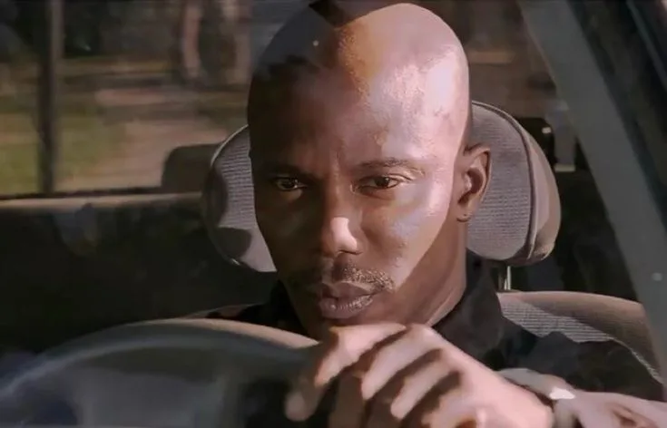

Мем сделан на основе кадра из фильма "Декстер". В этой сцене персонаж уже Джеймс Доакс догадывается, что Декстер — серийный убийца, но доказательств у него нет.
Да что тут — скажем большое спасибо уважаемому Эрику Кингу, потому что лишь взгляда на его эмоцию хватит, чтобы понять, о чём в этом меме идёт речь.
Снова пользователи тик тока сыграли на контрасте серьёзности сцены, тревожной музыки и различных ситуаций. Хотя куда чаще мем накладывали на забавные ситуации.
Такой формат в соцсетях любят, особенно ценится универсальность применения, и мем завирусился летом 2025 года. Пользователи подхватили волну и начали делать много-много мемов с участием Доакса про свой опыт, в том числе коллективный.